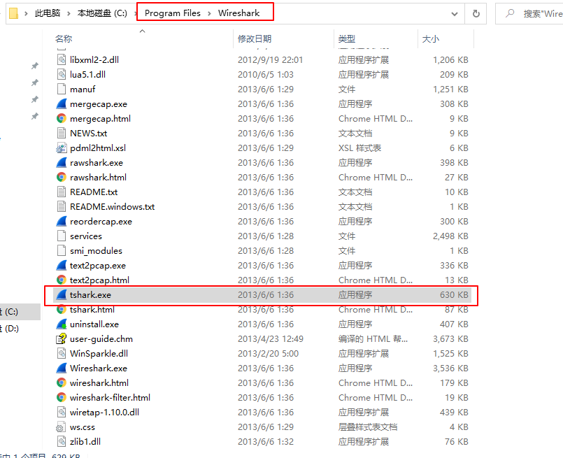
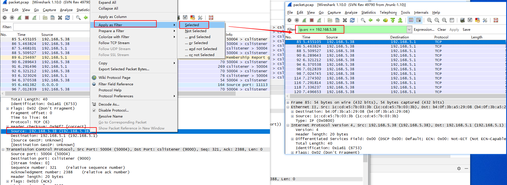
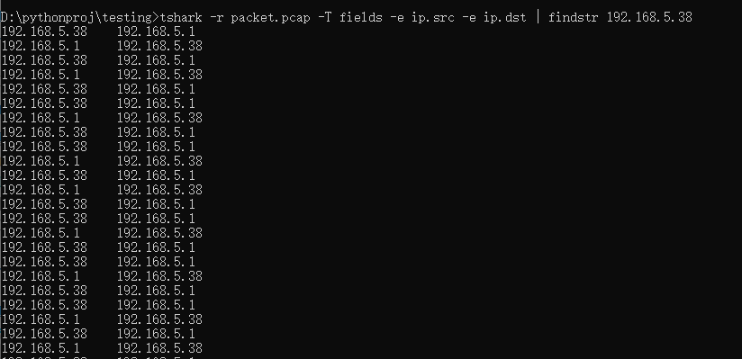

tshark是wireshark的命令行工具，通过shell命令抓取、解析报文。tcpdump是Linux系统下的抓包工具。wireshark和tcpdump都共同使用 libpcap作为其底层抓包的库，tshark也可以抓取报文。
有时候需要在linux系统或者ARM开发板中进行抓包，使用tcpdump抓包更加方便，在这种场景下，一般使用tcpdump进行抓包，然后在Windows中使用wireshark来分析生成的包文件，在自动化分析或者自动化测试中，可以使用tshark来进行包解析。本文介绍使用tcpdump抓取报文后使用tshark进行报文解析。
安装
wireshark下载安装
wireshark官网：https://www.wireshark.org/download.html
1 | # linux |
帮助信息1
$ tcpdump -h
查看可用端口：1
2
3
4
5
6$ tcpdump -D
1.ens33
2.ens37
3.veth2424bf4
4.any (Pseudo-device that captures on all interfaces)
5.lo [Loopback]
tcpdump
tcpdump官方文档：https://www.tcpdump.org/index.html#documentation
常用参数
-i interface：指定抓包接口，tcpdump -i eth1-c count：抓取包个数，tcpdump -c 5 -i eth0仅抓取5个包-w file：保存-A：ASCII码形式打印报文-XX：HEX 和 ASCII形式显示报文
抓包
抓取eth1网卡数据包，数据写入文件/tmp/packet.pcap1
tcpdump -i eth1 -w /tmp/packet.pcap >/dev/null 2>&1 &
其中
- >/dev/null：将标准输出（控制台输出）重定向到/dev/null中，/dev/null代表 linux 的空设备文件。表示不输出内容
- 2>&1：重定向绑定，错误输出（2）和标准输出（1）输出到同一个地方
- >/dev/null 2>&1的作用就是丢弃标准输出和错误输出，不会输出任何信息到控制台。
也可以只抓取特定协议的报文，比如过滤tcp报文：1
tcpdump -i eth1 tcp
抓取指定端口的报文1
tcpdump -i eth1 port 22
抓取指定源IP的报文1
tcpdump -i src 192.168.0.1
抓取指定目的IP的报文1
tcpdump -i dst 192.168.0.1
停止抓包
如果没有限制 tcpdump 抓包的数量（-c 参数），tcpdump 会持续抓包。可以通过 Ctrl+C 来停止抓包，或者杀掉tcpdump进程：1
killall -9 tcpdump
杀掉tcpdump进程后会停止抓包。
读取报文
1 | $ tcpdump -r packet.pcap |
tshark
抓包完成后对数据包进行解析，下面介绍使用tshark解析数据包。
tshark工具介绍
tshark参考文档：https://www.wireshark.org/docs/man-pages/tshark.html
如果要在windows命令行窗口使用tshark需要将Wireshark安装路径 C:\Program Files\Wireshark 添加到环境变量。

查看帮助信息：1
$ tshark -h
列出可用网卡接口：1
2
3
4
5
6
7$ tshark -D
1. \Device\NPF_{4B48290B-6C8B-4A93-A942-A7E565B02F09} (Npcap Loopback Adapter)
2. \Device\NPF_{D8F1F103-9733-422C-A521-77C678EEAFFC} (WLAN)
3. \Device\NPF_{AB52B03B-45ED-43C9-B88F-C7499A78AED0} (kc)
4. \Device\NPF_{64EA0097-AE33-49AD-9F42-959017C397FA} (WAN)
5. \Device\NPF_{257F23D0-E615-4656-AB32-5338DB62843C} (以太网 2)
6. \Device\NPF_{B5376652-68BB-45DA-A822-086E401773BB} (本地连接* 10)
前面提到过tcpdump -D也可以列出网卡信息，功能类似于Linux中的netstat -i 、ifconfig -a和ip link命令查看网卡接口信息。在windows中，除了在网络连接中查看网卡信息以外，也可以在命令行中通过如下命令查看：
ipconfig (/all)wmic nic list brief
Linux系统和windows系统tshark使用方法一样
tshark命令抓包
常用参数：
-i | --interface <capture interface>：指定抓包接口-f <capture filter>：抓包过滤，BPF(Berkeley Packet Filter)过滤规则，tcpdump和scapy(filter参数)都使用这个过滤规则，参考Python Scapy 报文构造和解析。-w <outfile>：将数据包写入文件-O <protocols>：打印数据包详细信息-V：打印数据包详细视图-P：写入文件过程中，打印数据包简略信息-c <capture packet count>：设置抓取最大的包个数-a|--autostop <autostop condition>：duration:5—5秒后停止抓包；files:2—写了2个文件后停止；filesize:100—包大小达到100KB后停止，
tshark抓包示例：1
2
3
4
5
6
7
8
9
10
11
12
13
14
15
16
17
18
19
20
21
22
23
24
25
26$ tshark -i "WLAN" -f "tcp port 80" -w "test.pcap"
$ tshark -i "WLAN" -f "tcp port 80" -w "test.pcap" -P -a duration:10
Capturing on 'WLAN'
15 0.000000 08:ed:ed:3e:9e:f3 -> Broadcast ARP 60 Who has 192.168.1.1? Tell 192.168.1.244
0.001051 fe80::4983:bddb:14e0:f9c4 -> ff02::1:2 DHCPv6 157 Solicit XID: 0xd2726a CID: 00010001272da3902c534a01104e
0.065122 TendaTec_21:73:e1 -> Broadcast ARP 60 Who has 192.168.1.1? Tell 192.168.1.126
省略......
$ capinfos test.pcap
File name: test.pcap
File type: Wireshark - pcapng
File encapsulation: Ethernet
Packet size limit: file hdr: (not set)
Number of packets: 155
File size: 29 kB
Data size: 23 kB
Capture duration: 9 seconds
Start time: Sun Apr 25 16:44:23 2021
End time: Sun Apr 25 16:44:33 2021
Data byte rate: 2595 bytes/s
Data bit rate: 20 kbps
Average packet size: 153.96 bytes
Average packet rate: 16 packets/sec
SHA1: 2b4a555a362301156ff26a7f295b4d609dd97a33
RIPEMD160: e34a63f4bcfe805d220f73dea78a8f4b63074a80
MD5: cc560fd267886a596ed72397a73625e3
Strict time order: True
tshark解析数据包
常用参数：
-r：指定需要解析的数据包-T：指定数据包解析输出格式，支持格式见解码所有数据，这里介绍-T fields，一般与-e选项连用。-e：指定过滤的字段-E：可用于指定分隔符：separator=,：默认分隔符为缩进（\t）-Y：过滤指定报文
1 | tshark [ -r <infile> ] -T fields [ -e <field> ] -E <field print option> -Y <displaY filter> |
需要解析的字段可以通过Wireshark查看：
选择要过滤的内容 -> 右键 -> Apply as Filter -> Selected

例1：过滤具有源IP和目的IP字段的所有报文1
tshark -r packet.pcap -T fields -e ip.src -e ip.dst
例2：过滤源地址为fe80::ca3a:35ff:fe09:efa1的报文，并读取UDP源端口号和IPv6目的地址。1
2
3
4
5
6
7
8
9$ tshark -r packet.pcap -T fields -E separator=, -Y ipv6.src==fe80::ca3a:35ff:fe09:efa1 -e udp.srcport -e ipv6.dst
,ff02::2
,ff02::2
,ff02::16
546,ff02::1:2
546,ff02::1:2
546,ff02::1:2
546,ff02::1:2
$
注意：-Y参数中，多个条件用||，&&，and或者or连接，如果使用多个-Y参数，只有最后一个生效，下面过滤源地址为fe80::ca3a:35ff:fe09:efa1的DHCPv6 Solicit报文：1
2
3
4
5
6
7
8
9
10
11
12
13$ tshark -r packet.pcap -T fields -E separator=, -Y dhcpv6.msgtype==1 -Y ipv6.src==fe80::ca3a:35ff:fe09:efa1 -e udp.srcport -e ipv6.dst
,ff02::2
,ff02::2
,ff02::16
546,ff02::1:2
546,ff02::1:2
546,ff02::1:2
546,ff02::1:2
$ tshark -r packet1.pcap -T fields -E separator=, -Y "dhcpv6.msgtype==1 and ipv6.src==fe80::ca3a:35ff:fe09:efa1" -e udp.srcport -e ipv6.dst
546,ff02::1:2
546,ff02::1:2
546,ff02::1:2
546,ff02::1:2
过滤完成后进行进一步的分析
比如可以使用grep命令进一步提取满足条件的报文
过滤源地址或者目的地址为192.168.5.38的报文1
2
3
4# linux
tshark -r packet.pcap -T fields -e ip.src -e ip.dst | grep 192.168.5.38
# windows
tshark -r packet.pcap -T fields -e ip.src -e ip.dst | findstr 192.168.5.38

也可以使用python、Java等高级语言进行进一步的分析，Python示例如下：1
2
3
4
5result = os.popen("tshark -r packet.pcap -T fields -e ip.src -e ip.dst“)
ret = result.read() #
for i, value in enumerate(ret.split("\n")):
# 处理value值
pass
解码所有数据
某些字段可能无法使用tshark过滤，这种情况下，可以先将pcap文件解码，tshark支持如下文件格式：1
ek|fields|json|jsonraw|pdml|ps|psml|tabs|text
解码成xml和text格式文件：1
2tshark -r packet.pcap -V -T pdml > packet.xml
tshark -r packet.pcap -V -T text > packet.txt
- -V：输出数据包详细信息
- -T pdml：指定数据包解码输出格式为xml格式
xml文档可以使用python的ElementTree工具解析：1
2
3
4try:
import xml.etree.cElementTree as ET
except ImportError:
import xml.etree.ElementTree as ET
问题：windows tshark命令无效
系统：windows10
tshark已加入环境变量中
输入tshark，显示：1
2
3
4C:\Users\DELL>tshark
The NPF driver isn't running. You may have trouble capturing or
listing interfaces.
Capturing on '鏈湴杩炴帴* 9'
WIreshark安装需要安装WinPcap，查看电脑已经安装了WinPcap。
接下来以管理员身份运行命令行串口，输入net start npf 启动NPF，出现如下报错信息：1
2
3
4C:\WINDOWS\system32>net start npf
服务名无效。
请键入 NET HELPMSG 2185 以获得更多的帮助。
卸载WinPcap10，下载安装winpcap4.1.3：https://www.winpcap.org/install/default.htm
重新输入net start npf 启动NPF：1
2
3
4C:\WINDOWS\system32>net start npf
请求的服务已经启动。
请键入 NET HELPMSG 2182 以获得更多的帮助。
启动成功！
tshark命令也可以正常使用了
本文标题:使用tshark命令解析tcpdump抓取的数据包
文章作者:hiyo
文章链接:https://hiyongz.github.io/posts/network-tcpdump-and-wireshark/
许可协议:本博客文章除特别声明外，均采用CC BY-NC-ND 4.0 许可协议。转载请保留原文链接及作者。